TAEYAN TECHNOLOGY
太炎科技
品牌视觉识别
以连接、汇聚与持续生长为品牌核心，将字母结构转化为开放的科技符号，并延展为完整、清晰的视觉识别系统。
- 项目类型
- 品牌视觉 / Logo
- 设计范围
- 策略 / 识别 / 应用
- 内容规模
- 11 张高清页面
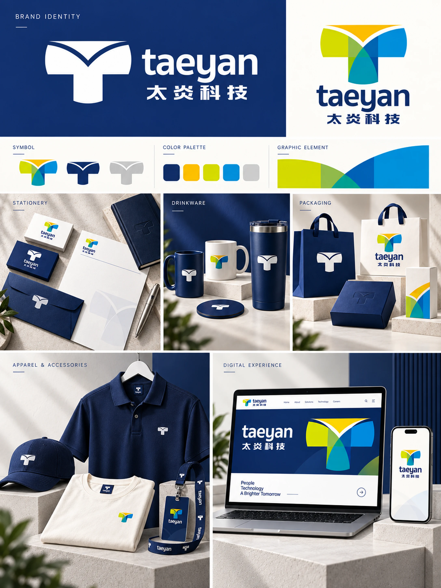
LOGO STORY
从连接关系出发，
建立可持续的品牌符号。
四个页面依次呈现核心理念、图形构思、标志组合与色彩探索，让图形逻辑与品牌表达形成完整闭环。
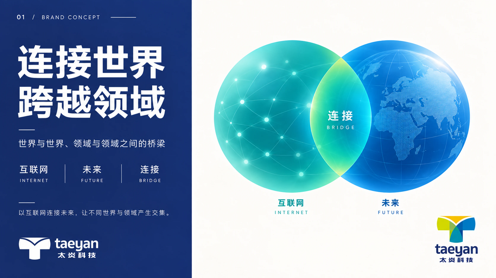
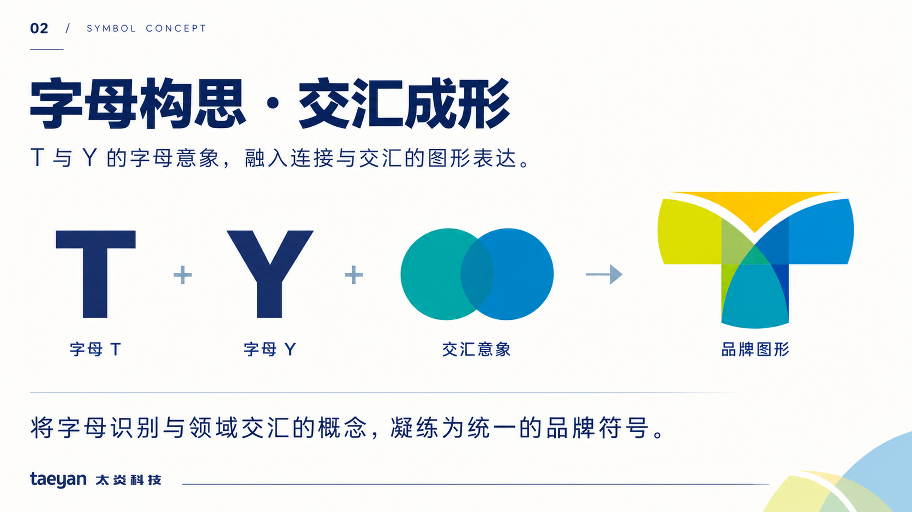
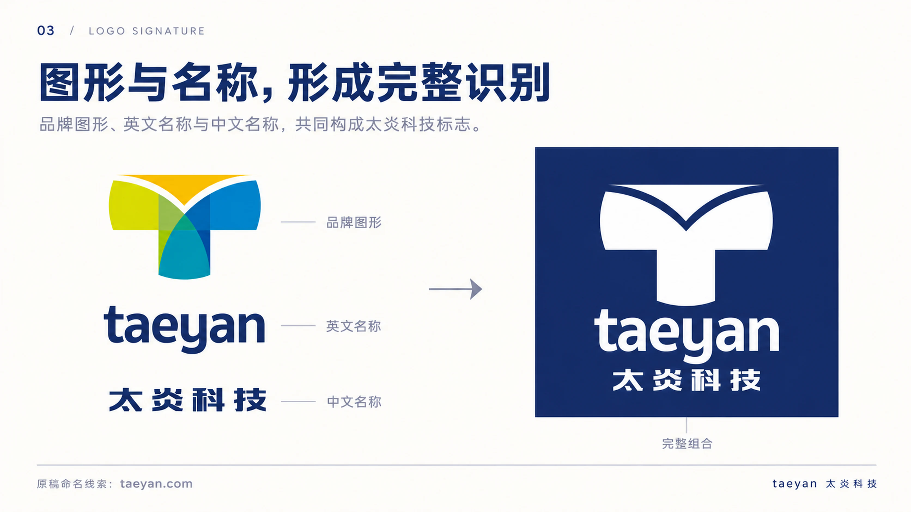
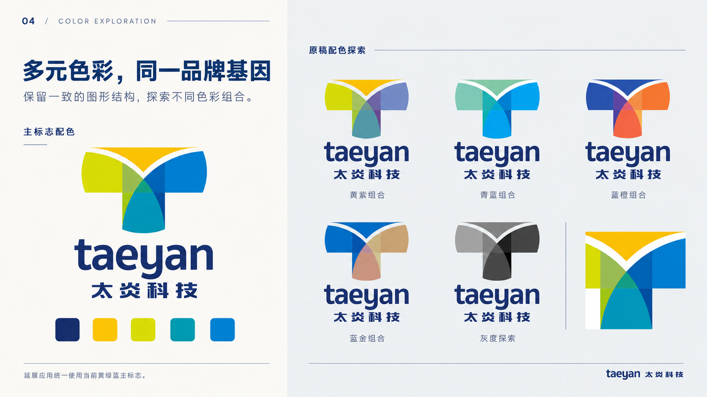
BRAND APPLICATIONS
让识别系统进入
真实的品牌触点。
从基础规范到办公物料、杯具、包装、服装工牌和数字界面，统一验证标志在不同媒介中的适应性。
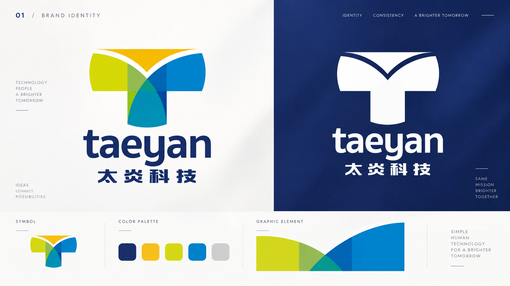
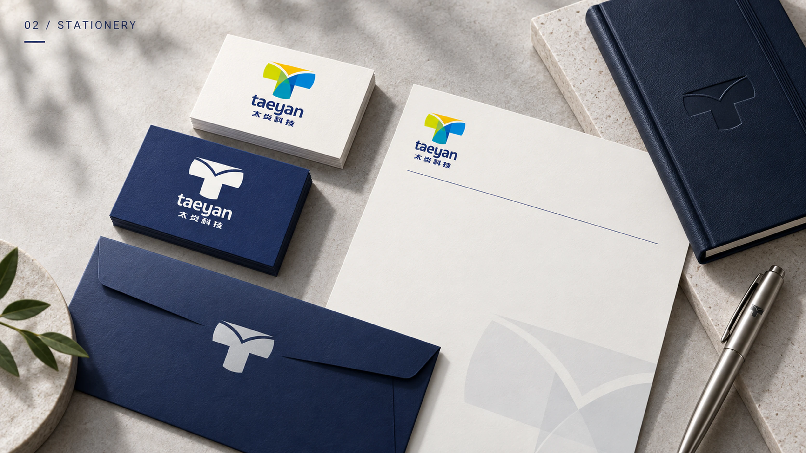
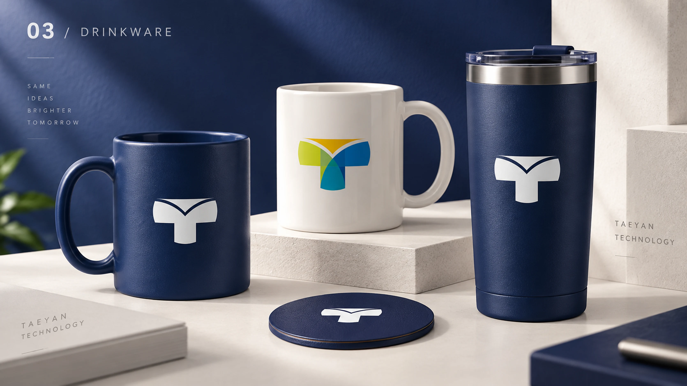
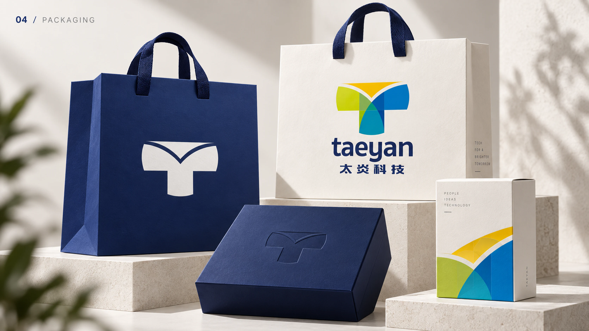
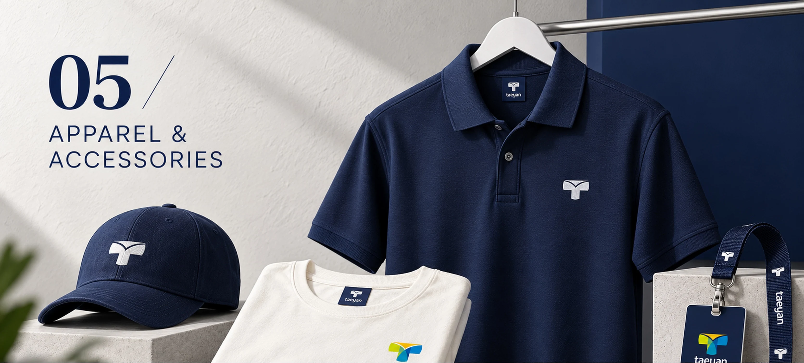
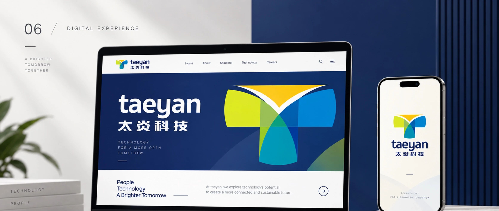